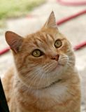
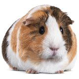

Wszystkie zwierzaki szukające domu

Azor
Azor to 4 miesięczny szczeniak porzucony przez poprzedniego właściciela.Jest to piękny pies w kolorze beżowym i jego ulubioną zabawą jest gra w chowanego.

Ulubioną zabawą Rudego jest proszenie o jedzenie stojąc na łapkach oraz machając ogonem i miaucząc.
Rudy
Rudy to wspaniały kot typu dachowiec radośnie szukający swojego właściciela.Ulubioną zabawą Rudego jest proszenie o jedzenie stojąc na łapkach oraz machając ogonem i miaucząc.

Ulubioną zabawą Feliego jest piszczenie i chrumkanie oraz podskakiwanie jak małpka podczas otrzymywania pokarmu od osoby karmiącej.
Feli
Feli to ładna świnka morska rasy ,,Rozetka.Ulubioną zabawą Feliego jest piszczenie i chrumkanie oraz podskakiwanie jak małpka podczas otrzymywania pokarmu od osoby karmiącej.